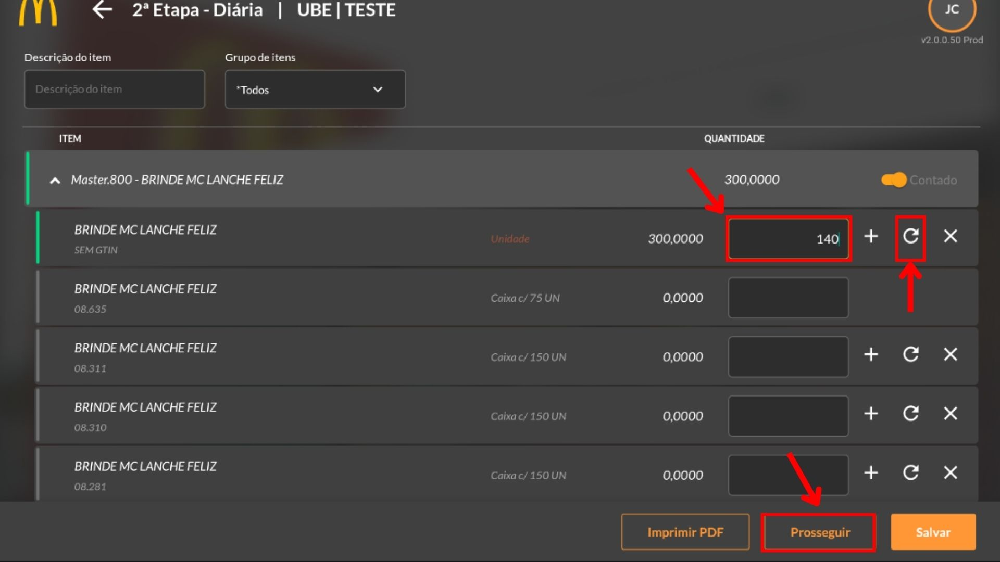
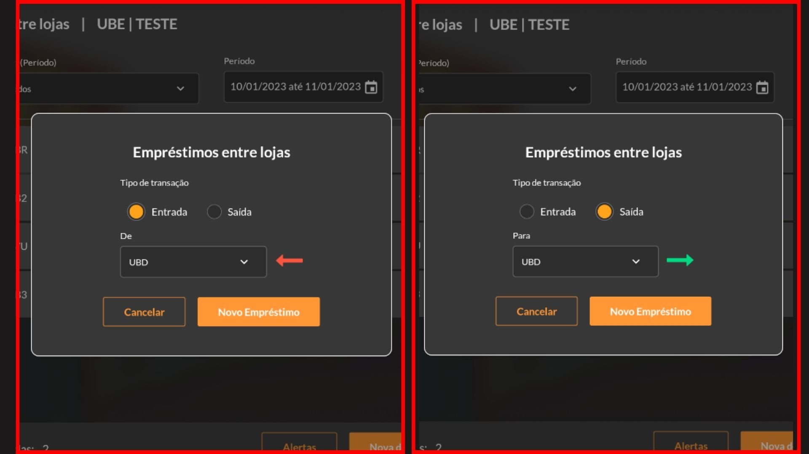

Estoque
Introdução
O módulo de Estoque possui várias funcionalidades para controle de inventário, possibilitando realizar movimentações entre lojas ou quiosques e registrar os breaks e desperdícios. A tela inicial contém os gráficos de movimentação do estoque, dos breaks, desperdícios e movimentações, podendo variar de acordo com os tipos de lançamento da base.
Qual utilidade deste módulo?
É um módulo que auxilia na logística de materiais que exigem rastreabilidade em saídas e entradas no inventário, possibilitando o controle completo das movimentações em tempo real. Estão à disposição as funções de Break/Desperdício, Inventário, Controle de quiosques e Empréstimos entre lojas. Realizando transações nesses menus, irão realizar movimentações do estoque.
O submenu “Módulo de Estoque” no BrOne Franquias, localizado no módulo de Administração do SAP, engloba todas as configurações essenciais relacionadas ao controle de estoque no aplicativo de acordo com as necessidades do McDonald’s, contando com controle de quiosques e empréstimo entre lojas, diferentes tipos de saídas de estoque, classificações dos itens e personalização de botões de contagem de estoque.
Acesso ao Módulo
Ao acessar o módulo, a tela representada pela imagem acima é aberta, e são exibidas algumas informações, como o status do turno aberto/fechado, sendo que ao abrir o turno ele será representado pelo círculo verde, e quando estiver fechado, ficará com o círculo vermelho e ao lado será mostrada a data em que foi aberto/fechado, horário e operador. Abaixo da informação do turno é mostrada a última contagem de inventário realizada, com a data horário e um botão ao lado para visualizar a contagem (para mais detalhes, vá para o item 4.6.1. – Visualizar Contagem) (2). Após as informações de inventário, é exibido o saldo de movimentações, que indica o saldo de devoluções a serem feitas por item no período de um mês, por exemplo, ao realizar um empréstimo com 30 unidades de Água e 20kg de alface em tiras será exibido no saldo de movimentações o número 2, pois há dois itens a serem devolvidos (independente da quantidade total recebida ou enviada) (3).
Além de todas as informações resumidas acima, são listados todos os gráficos de barra das funções deste módulo (4), mostrando os valores em reais dos últimos 15 dias, com sua respectiva data e informação, como quantidade gasta em reais equivalente aos itens registrados como Break, Desperdício etc. As imagens abaixo representam alguns exemplos possíveis de visualização dos dados registrados na tela.
Por último, temos a barra de menu lateral (5), que contém todas as funções de registro de break/desperdício, contagem de estoque, controle dos quiosques, empréstimos entre lojas e objetivos mensais.
Desperdícios, Breaks e Promoções
Saídas de estoque – Introdução
Motivos de saída de estoque
A tela de “Motivos de Saída de Estoque” define outras opções de inventário que estarão disponíveis no aplicativo para realizar as saídas de estoque que não foram feitas por vendas (por exemplo, desperdícios completos e incompletos, breaks, promoções e outros).
É possível definir quais os itens estarão disponíveis para a transação, se serão Combos, PLUs ou Masters e qual o depósito que serão feitas as movimentações.
Saídas de estoque – Processos
A primeira opção do menu lateral é referente à função de registro de Break/Desperdício, esta é a opção para realizar o processo de lançamento dos produtos que os funcionários consomem (break), os desperdícios (completo ou incompleto) e promoções, nesta funcionalidade existem opções para cada tipo de lançamento de acordo com sua necessidade, como por exemplo a opção para realizar um lançamento por Loja ou por Quiosque.
Há uma pequena diferença entre o desperdício completo e incompleto, enquanto no completo você perde um lanche todo, no desperdício incompleto você pode registrar os itens individuais que formam aquele lanche e que foram desperdiçados (tomate, alface, queijo etc.).
Ao clicar em qualquer opção aparecerá uma tabela com todos os itens disponíveis para baixa no estoque, de acordo com a lista e sua função a listagem exibida pode ser diferente. Apesar disto, todas as telas possuem o mesmo padrão de exibição, no cabeçalho da tela contém uma barra de pesquisa por descrição de itens (1) e opções de filtro por grupo de produtos e turno (2). Abaixo desses campos, é exibida a tabela que contém o nome do item (3), a unidade de medida (4), a quantidade que foi registrada (5), um campo para preencher com a quantidade que será lançada (6), um ícone de aceite (7), um ícone para cancelar (8) e o valor que já foi lançado em outro momento durante aquele turno (9).
Para realizar o lançamento, os valores desejados devem ser inseridos na caixa de texto (6), adicionados ao clicar no sinal de positivo (7) e finalizados ao clicar em “Salvar” no rodapé da tela.
Além da opção de “Salvar”, ao seu lado consta a opção de “Alertas”, que é utilizada quando ocorre algum erro no processo. A imagem abaixo faz uma representação do que é exibido ao clicar nesta opção, também é possível ver os detalhes do erro ao selecionar algum item.
Nesta tela são exibidas duas opções: “Fechar baixa” e “Reprocessar”. Ao selecionar a opção “Fechar baixa” o lançamento será cancelado, porém é possível tentar novamente ao clicar em “Reprocessar” e caso obtenha sucesso na operação, uma tela será aberta mostrando que foi concluído, como mostra na imagem abaixo.
Inventário – Contagens
Contagens – Introdução
Contagens de Estoque
A tela de “Contagens de estoque” define quais tipos de contagens estarão disponíveis dentro aplicativo para realizar o controle de inventário (podendo definir por diferentes períodos, sendo estes diários, semanais, quinzenais, mensais, ou por tipo de item estocável, como por exemplo uma contagem específica para materiais de limpeza).
Na imagem abaixo, é mostrado o exemplo de configuração do tipo de contagem diária, nos quais são estabelecidos quais itens de estoque (itens masters) farão parte desse controle, qual a filial que pertence a configuração, qual o depósito nas quais serão feitas as movimentações, variação permitida de contagem, se permite desvio, entre outras configurações.
Contagens – Processos
A função Inventário contém todas as contagens de estoque disponíveis na filial selecionada, que foi previamente configurada no SAP, podendo ter contagens diárias, semanais, quinzenais, mensais etc.
A tela inicial contém opções de filtro por tipo de inventário (se é diário, semanal etc.) (1), por turno (2), por período (3) e status (contagem aberta ou fechada) (4). Como exemplo foi selecionado um período de 01/01/2023 a 04/01/2023 para visualizar todas as contagens realizadas. Ao selecionar o filtro por período, é exibida uma lista contendo a data e horário que foi realizada (5), o tipo de contagem (6), o operador responsável (7) e no final da faixa, caso a contagem esteja aberta, é exibida uma opção para finalizá-la ao clicar em “Fechar” (8), no exemplo abaixo não há nenhuma disponível. Há ainda a possibilidade de visualizar o histórico através da seta ao lado de “Fechar” (8). No rodapé da tela é exibido o botão de “Nova Contagem” (9), que deve ser selecionado no momento de realizar a verificação do estoque.
Ao clicar em “Nova Contagem”, é possível visualizar a uma lista agrupada dos itens do inventário disponíveis para contagem, onde temos uma faixa de opções contendo busca por Descrição do item e filtro por Grupo de itens (1). Abaixo da faixa são exibidos os itens do inventário com seu código Master seguido do seu nome (2), a Quantidade informada (3) e uma opção para contado ou não contado, que muda automaticamente ao preencher o campo de quantidade (4), no rodapé da tela é possível salvar um arquivo em PDF para impressão, prosseguir e finalizar a operação de contagem ou salvar e sair para finalizar posteriormente (5).
Para atualizar com os valores do estoque é necessário selecionar o item master desejado, assim como demonstra a imagem abaixo (1), e então aparecerá as opções de preenchimento por unidade (2), um campo para inserir a quantidade contada (3), um ícone para adicionar o valor digitado (deve ser selecionado para contabilizar) (4), um ícone que substitui o valor já contabilizado anteriormente com o novo valor digitado (5) e por último um ícone para cancelar o valor digitado (6).
Ao clicar em “Imprimir PDF”, será salvo um arquivo em PDF contendo todos os dados e informações da contagem atual (dependendo da etapa que estiver, o arquivo poderá sair diferente).
Um exemplo de relatório de contagem de estoque pode ser visto abaixo, contendo a etapa (1), a filial e o gerente responsável (2), a data e o horário que foi realizado (3). Abaixo destas informações é exibida uma tabela com todos os itens contados, possuindo sete colunas: Nº Master do item (4), Descrição do item (5), Quantidade em estoque (6), Quantidade contada (7), Diferença percebida (8), Variação percentual da diferença (9) e Unidade de Medida que foi baixada (10).
Após preencher todos os itens do estoque da loja, existem três ações no rodapé disponíveis: imprimir PDF (que, como dito anteriormente, salvará um arquivo em PDF para impressão), prosseguir (e continuar para a segunda etapa) ou salvar (irá deixar salva as alterações e contabilizações dos itens, mas não prosseguirá para a próxima etapa).
Ao selecionar “Prosseguir”, abrirá a tela da segunda etapa (demonstrada na imagem abaixo). Nesta tela será listada todos os itens que foram contabilizados e que tiveram divergências do estoque contabilizado pelo SAP, o usuário pode modificar a quantidade ou deixar como está e selecionar prosseguir novamente para ir para a próxima etapa.
Se, e somente se, o usuário tenha alterado o valor da quantidade na tela da segunda etapa, irá abrir a tela da terceira etapa, que servirá para selecionar qual das contagens feitas deve ser considerada, assim como mostra na imagem abaixo. Se nenhuma unidade foi alterada durante a segunda etapa, a terceira etapa será ignorada e pulará automaticamente para a quarta etapa.
Ao selecionar “Prosseguir”, abrirá a tela da quarta e última etapa (demonstrada na imagem abaixo), na qual exibe uma tabela listando os itens contabilizados, contendo caixas de seleção para cada item que serão ajustados em estoque (caso necessário), seu nome, a quantidade em estoque, a quantidade contada, a diferença calculada, a porcentagem referente a diferença e por último a unidade de medida da quantidade. Na imagem abaixo, o último item referente ao brinde do McDonald’s foi percebida uma diferença de 89,01% a menos do valor contabilizado em estoque.
Após selecionar todos os itens que deseja ajustar em estoque, clique no botão “Ajustar estoque” do rodapé para prosseguir com a finalização da contagem, após isto abrirá um pop-up avisando que o inventário foi atualizado.
A tela de “Resultado Final – Diária” será aberta, contendo a função de duplicar no rodapé, que é configurada através do SAP e é utilizada para replicar o resultado final em outros estoques (no entanto, essa funcionalidade só pode ser utilizada por usuários autorizados), é possível selecionar itens específicos através das caixas de seleção que deseja duplicar ou que deseja excluir do processo. Além disso, há uma opção que indica que houve um lançamento de estoque, como demonstra a imagem abaixo.
Note que, caso tudo esteja de acordo na primeira etapa (ou seja, sem divergências no estoque), pulará direto para a quarta e última etapa, exibindo um pop-up dizendo que não foi encontrada nenhuma divergência, como mostra na imagem abaixo.
Visualizar Contagem
Na tela inicial há um campo que resume a última verificação de contagem do inventário, no qual é possível acessar de forma rápida a tela de contagem ao clicar na opção de “Visualizar contagem”, a tela que é aberta é a mesma que ocorre a contagem diária presente na funcionalidade “Inventário” no menu lateral, ao clicar sobre ela podemos ver em qual etapa a contagem se encontra.
Controle de Quiosques
Controle de quiosques – Introdução
A tela de “Controle de Quiosque” é utilizada para definir os quiosques ligados a alguma filial na qual são realizadas movimentações de itens dentro do aplicativo, portanto é nesta tela que são feitas todas as configurações necessárias para gerar as movimentações do estoque e notas fiscais no SAP (através da tela “Apuração de saldo do quiosque”).

A terceira função do menu lateral “Controle de Quiosques” é utilizada para controlar o estoque dos quiosques vinculados à loja filial. Sua utilização é bem simples, ao clicar na opção a imagem mostrada abaixo será aberta na tela do tablet para iniciar o processo de transação do estoque do quiosque para a loja ou do estoque da loja para o quiosque (não há transferência entre quiosques, apenas entre quiosques e loja).
A tela de início da função de Controle de Quiosques (imagem acima) possui uma faixa de filtros (1) por tipo de transferência (entrada ou saída), turno vinculado ao período, determinação de período (intervalo de tempo) e quiosques vinculados, abaixo da faixa de filtros é exibida uma lista com todas as transferências realizadas de acordo com o filtro estabelecido (2), contendo o quiosque de referência, quantidade de itens transferidos e o tipo (se foi entrada ou saída de mercadoria), com opção de visualizar os detalhes ao clicar sobre um dos lançamentos realizados. Para iniciar um novo processo, selecione o botão no canto inferior direito “Nova transferência”.
Ao clicar em “Nova Transferência” será aberto um pop-up, como mostra na imagem acima, na qual deve ser selecionada o tipo de transação (1) e o quiosque no qual será feito o processo (2). Observe que a seta muda de cor e direção de acordo com o tipo da operação, simbolizando a ação realizada (3). Após isso, selecione o botão de “Confirmar” para prosseguir com a ação.
Será aberta a tela para preenchimento com os itens disponíveis no estoque da loja ou do quiosque para a transferência, a tela é semelhante à do inventário, a diferença é que exibe apenas os itens que estão no estoque e sua quantidade.
{kind=link}
Após processado, esta será a tela onde exibe a Descrição do Item, Status de Saída, Status de Entrada, Transferido e Unidade. Caso tenha acontecido algum problema ou erro, a opção reprocessar ficará disponível para realizar o reprocessamento e o motivo do erro será exibido. Ao clicar em voltar, retornará à tela inicial e mostrará todas as transferências realizadas, note que também é permitido visualizar todos os lançamentos que não foram processados corretamente através da opção “Alertas” no canto inferior direito da tela.
Empréstimos entre Lojas
Empréstimos entre Lojas – Introdução
A tela de “Controle de empréstimos entre lojas” é utilizada para configurar a movimentação de estoque entre as filiais cadastradas no SAP e realizar o vínculo do depósito das saídas e entradas, além disso é possível determinar quais itens estarão disponíveis para realizar essas transações e, caso houver, as regras de distribuição.
{kind=link}
Empréstimos entre Lojas – Processos
A quarta função do módulo de estoque é a de realizar Empréstimos entre lojas, esta opção permite realizar envios de mercadorias de uma filial para outra, a fim de manter um controle interno de devoluções.
A tela inicial do módulo (representada pela imagem abaixo) contém uma faixa de filtros (1) por tipo (entrada ou saída), turno vinculado ao período, determinação de período (intervalo de tempo) e lojas, abaixo da faixa de filtros é exibida uma lista com todas as transferências realizadas de acordo com o filtro estabelecido (2), contendo a data e o horário que foi realizado o empréstimo, a filial, o gerente que abriu a loja, a quantia de itens envolvido e o tipo de processamento (entrada ou saída). É possível ver os detalhes ao selecionar uma das linhas.
No rodapé da tela temos a informação de Entradas e Saídas (3) feitas em **bug**, e as três funções (4), sendo elas, respectivamente, de visualizar os lançamentos com erro de processamento para mais detalhes (Alertas), realizar uma devolução feita anteriormente de entrada ou saída (Nova devolução) e realizar um novo empréstimo entre as lojas (Novo empréstimo).
Ao clicar na opção “Nova devolução” será aberta a tela que contém todos os empréstimos já feitos (representada pela imagem abaixo), com uma faixa de filtros (1) por grupo de itens, tipo de transação (entrada/saída) e loja (filiais). Abaixo é exibida uma tabela contendo o item (2), a data que foi feito o processo (3), a loja (4), a quantidade emprestada (5), quantidade devolvida (6), saldo de itens a devolver (7), itens no estoque da filial (8), a unidade de medida (9), o tipo de processamento (10) e a opção para selecionar e registrar a devolução (11).
Ao clicar em “Devolução” abrirá um pop-up contendo quanto foi emprestado, a quantidade em estoque e um campo para adicionar a quantia que deseja registrar da devolução, o mesmo pop-up é utilizado tanto no processo de entrada quanto na de saída, e o valor registrado não necessita ser o mesmo que está no emprestado, ou seja, a devolução pode ser parcial. Para inserir o valor a ser devolvido, o botão de “+” deve ser selecionado, e então o botão “Devolver” ficará disponível para efetuar o processo.
Está é a tela após o processamento de devolução, onde mostra a lista com os itens processados. Caso a devolução tenha ocorrido com sucesso, o item ficará em verde. Caso tenha algum problema o botão “Reprocessar” estará disponível para seguir com o reprocessamento.
Ao clicar na opção “Novo empréstimo” um pop-up será aberto, semelhante ao de controle de quiosques, que contém o tipo de processamento (saída ou entrada), uma opção para selecionar qual filiar será enviada a mercadoria e uma seta demonstrando visualmente o processo.
Após selecionar o tipo de transação e a filial, para prosseguir basta selecionar a opção de “Novo empréstimo”, e abrirá a tela de itens disponíveis no estoque, demonstrada na imagem abaixo, que contém os nomes dos itens, a quantia em estoque e a quantidade a ser transferida (se for saída da mercadoria, aparecerá o estoque da filial do aplicativo, se for entrada de mercadoria, aparecerá o estoque da outra filial).

Após preencher os itens a serem transferidos, selecione o botão “Processar” no canto inferior direito para prosseguir. A tela de conclusão será aberta (imagem abaixo) e irá mostrar cada item que foi selecionado e suas demais informações (gerente do turno, status, quantidade transferida e unidade de medida). Caso algum erro aconteça durante o processo, ele será exibido nesta tela e é possível efetuar o reprocessamento ao clicar em “Reprocessar”. O botão “Voltar” no canto inferior direito retornará à tela inicial da função.
Objetivos Mensais
A quinta função do módulo de estoque é a de Objetivos mensais, esta opção permite realizar um cadastro para os valores feitos manualmente para a comparação com o realizado no relatório de Objetivo x Realizado.
Para cadastrar um novo objetivo, selecione o botão no canto inferior direito “Novo objetivo” (1)
Ao clicar em “Novo objetivo” será aberto uma tela, como mostra na imagem acima, com o ano e o mês corrente (1), podendo ser alterado de acordo com a necessidade. Logo abaixo temos os tipos de inventário para serem preenchidos (2). Após isso, selecione o botão de “Adicionar” para prosseguir com a ação (3).

Após adicionar o objetivo, voltará para a tela inicial de Objetivos mensais com o cadastro realizado, com a possibilidade de copiar, editar ou remover.